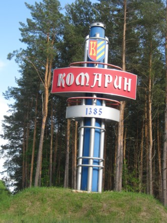

От героев былых времен
Не осталось порой имен…
Только гордая память их
Поселилась в сердцах живых.
Этот вечный огонь,
Нам завещанный одним,
Мы в груди храним.
С Первых часов войны миллионы людей разных национальностей, поколений и социальных слоев встали на защиту Родины, взялись за оружие. Даже тяжелые потери Красной Армии в начале войны не сломили волю народа, его готовность защищать свою державу. На фронте и в тылу, в партизанских отрядах и подпольях, преодолевая неимоверные трудности, неся огромнейшие жертвы, советские люди совершили подвиг, которого еще не было в мировой истории, превратив трагедию в триумф, горечь поражений – в праздник Победы.
Под тысячами обелисков во всей белорусской земле вечным сном спят миллионы тех, кто не вернулся с войны. И пока бьются наши сердца , мы не имеем права в повседневных радостях и хлопотах забыть об их подвиге.
Низко склоняем голова перед памятью героев, сделавших все для нашей свободы, счастья и светлого будущего. Эта память зовет нас, сыновей, внуков и правнуков отважных бойцов, быть достойными их славы.
В своем прошлом народы всегда ищут тот источник, который способен укрепить духовные силы. Память необходима живым, чтобы, глядя на величие былого, строить завтрашний день .
Знать историю Родины – наисвятейшая обязанность каждого настоящего гражданина Беларуси.
Е.Агранович

29 Сентября 1943г. Был освобожден первый районный центр БССР – Комарин Гомельской области 70 войнам отличившимся при форсировании Днепра в районе Комарина присвоен звание Герои Советского Союза. В комаринской средней школы Брагинского района, Гомельской области создан и функционирует кабинет Боевой славы в котором находится материалы повешены освобождению Коимрину а также воспоминания жителей Комарина Ветеранов Великой Отечественной войны. В школе есть Аллея Героев посвящённым 6-ти Героем Советского Союза похороненным в братской Могиле в Комарине . Материалы кабинета боевой славы использоваться для проведения уроков не классных мероприятиях с целью гражданского и политического воспитаем Учишься .

{kind=link}